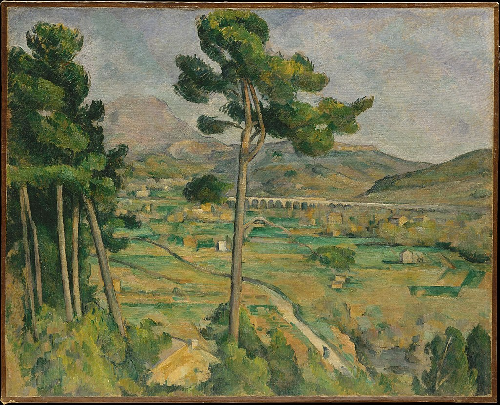

<head>
<meta charset="UTF-8" />
<meta name="keywords" content="drawing, painting" />
<meta name="description" content="drawings by Sunjy" />
<title>Sunjy</title>
<link rel="shortcut icon" type="image/x-icon" href="../../mImages/mCommon/favicon.ico" media="screen" />
<link rel="stylesheet" type="text/css" href="../../mCsses/mCommon/mCssA.css" />
<link rel="stylesheet" type="text/css" href="../../mCsses/mCommon/mCssB.css" />
<link rel="stylesheet" type="text/css" href="../../mCsses/mCommon/mCssC.css" />
<link rel="stylesheet" type="text/css" href="../../mCsses/mCommon/mCssD.css" />
<link rel="stylesheet" type="text/css" href="../../mCsses/mContent/mCssA.css" />
<link rel="stylesheet" type="text/css" href="../../mCsses/mContent/mCssB.css" />
<link rel="stylesheet" type="text/css" href="../../mCsses/mContent/mCssC.css" />
<link rel="stylesheet" type="text/css" href="../../mCsses/mContent/mCssD.css" />
</head>
<script type="text/javascript" src="../../mScripts/mContent/mContentAA.js" /></script>
<script type="text/javascript" src="../../mScripts/mContent/mContentAB.js" /></script>
<script type="text/javascript" src="../../mScripts/mContent/mContentAC.js" /></script>
<script type="text/javascript" src="../../mScripts/mContent/mContentAD.js" /></script>
<script type="text/javascript"></script> 
<script type="text/javascript">
document.write('<div class="mImgAbsolute"></div>');
/*
document.write('<p class="mFontSizeBColor" />From a white paper...</p>');
document.write('<table class="center"><tr><td>');
document.write('');
document.write('</td></tr></table>');
*/
</script>


<script type="text/javascript">
document.write('<p class="mFontSizeBColor" />Mont Sainte-Victoire and the Viaduct of the Arc River Valley</p>');
document.write('<p class="mFontSizeSColor" />“Mont Sainte-Victoire and the Viaduct of the Arc River Valley” by Paul Cézanne depicts Montagne Sainte-Victoire and the valley of the Arc River.<br><br>Montagne Sainte-Victoire dominates the landscape of Cézanne’s hometown of Aix-en-Provence, which can be seen in the background.<br><br>The city is visible in the distance, far back from the valley of the Arc River. This painting also depicts the railway bridge on the Aix-Marseille line at the Arc River Valley and the train, which runs on it.<br><br>In this painting, Cézanne explores the creation of depth using layers to build up a set of horizontal planes that draw the eye into the view.<br><br>Although in terms of size, this is one of Cézanne’s smallest works in his artistic career, it has been described as one of Cézanne’s most significant artworks.<br></p>');
document.write('<table class="center" /><tr><td>');
document.write('<br>Montagne Sainte-Victoire dominates the landscape of Cézanne’s hometown of Aix-en-Provence, which can be seen in the background.<br><br>The city is visible in the distance, far back from the valley of the Arc River. This painting also depicts the railway bridge on the Aix-Marseille line at the Arc River Valley and the train, which runs on it.<br><br>In this painting, Cézanne explores the creation of depth using layers to build up a set of horizontal planes that draw the eye into the view.<br><br>Although in terms of size, this is one of Cézanne’s smallest works in his artistic career, it has been described as one of Cézanne’s most significant artworks.<br>" />');
document.write('</td></tr></table>');
</script>


